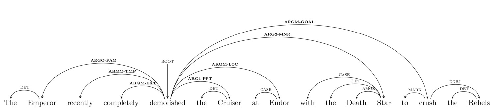

Verb Arguments and Verb Senses
Semantic Frames
Semantic Roles and Role Labeling
How does doing any of this help us?
She fit the package into the over-full trunk
She’s fit to work on your project, given her background
She’s having fits about the new deadline
She’s quite fit for her age
That fit nicely into my schedule
She fits in well in San Diego
They fired 10 rounds at the target
They fired him after 10 years
They fired the pot in the kiln
The engine is fired by a steady stream of coal
The fire was started by lightning
I hit the dragon with an arrow
SchwaCo stock hit $500 a share
Rob loves to hit the golf course on Fridays
The mafia hit stunned the local government
The fingerprints had three hits on old records
I hit on the dragon at the sleazy bar
I hit up the dragon for some gold until payday
Some verbs don’t take an object
Some verbs take an object always
Some verbs take two objects
Different verbs demand different arguments
Some element of a sentence which helps complete the principal meaning of the sentence.
Will hit the dragon
Mary baked Sam a cake
Maria fired six rounds.
“I hit the dragon with an arrow”
Thing doing the hitting
Thing being hit
How the hitting is done (manner, or instrument)
“SchwaCo stock hit $500 a share”
Thing hitting the level/goal/landmark
The level/goal/landmark
No instrument argument is possible
“Rob loves to hit the bowling alley with his friends”
Person going to the activity (animate)
Activity
Doesn’t take an inanimate subject or an instrument
*“The ball hit the links on weekends”
*“Rob loves hitting the ballfield with his bat”
“Sherry hit on Steve at the party”
Person making the advances
Person hit on
No instrument is permissible
“I hit up the dragon for some gold”
Person making the request
Request
Requested from
All three arguments are required
“I hit up the dragon” (For?)
“I hit up for money” (Who?)
“Hit up for money” (???)
Can’t be ditransitive (*“I hit up the dragon some gold”)
They fired 10 rounds at the target
They fired him after 10 years
They fired the pot in the kiln
The engine is fired by a steady stream of coal
The fire was started by lightning
A set of arguments which it expects
… which combine to give the overall meaning of the sentence
This is the idea behind Frame Semantics
These are lexically specific
This information can be seen as a part of the verb’s meaning
The PropBank Project has been working to produce frames for every verb in large chunks of text
Will cowered in fright at the number of projects to grade
Roles:
Lancelot demolished the unholy altar
Alexander the Great conquered Halicarnassus and its Persian occupants
The two cats cuddled on the couch
Vladimir hit the orc with his spear
The twitch streamer hit 6000 subscribers
Jian hit the beach to do some surfing
Mice like cheese.
Will is a linguist.
Jamba Juice pretzels are alright as as food.
I’m sorry about the puns.
His students find Will to be strange
“Sorry”
“Angry”
“Hangry”
“Romantic”
Arg0-PAG: underappreciator
Arg1-PPT: thing not valued highly enough
Arg0-CAU: cause of anxiety – anxious over/about what?
Arg1-CAU: nervous entity
Arg0-PAG: non-worker
Arg1-PRD: job, project
Arg1-PPT: overweight entity
Arg2-EXT: amount over weight
Arg3-PRD: weight measurement
Arg0-CAU: thing providing light
Arg1-PPT: object which is covered in light
What arguments that a given predication expects
What the semantic nature of these arguments is
Will hit the dragon with an arrow.
It was the dragon that Will hit with an arrow.
Will used an arrow to hit the dragon.
An arrow was used by Will to hit the dragon.
The dragon, with an arrow, was hit.
Hit Verb: Dependency parse shows three arguments: “rock”, “dragon”, “Will”
Hit Verb: Parse shows “1000 points” and “Score”.
Fit Adj: Parse shows only one argument, ‘he’
Fit Adj: Parse shows two arguments, ‘co-pilot’, ‘fly’
“Uh oh. There’s firing going on. It’s the business sense. We should find the argument doing the firing, who’s being fired, and where they’re being fired from.”
“Uh, wait, this is the”fired a gun” sense. We need to know what argument was fired, who pulled the trigger, and who, if anything, was fired at.”
You can track down the arguments that you didn’t find!
“The dragon was hit by an arrow”
“Lit!”
“I am anxious”
Knowing the expected semantic roles tells you what’s missing!

“Who demolished the cruiser?”
“Where was the cruiser demolished?”
“How was the cruiser demolished?”
“Why was the cruiser demolished?”
“Given this dependency parse, identify the arguments”
Around 90% precision (e.g. correct labels detected)
Around 80% recall (e.g. cases for labeling found)
The AMR (Abstract Meaning Representations) Project builds on this work
Brings additional elements to verb frames to enrich what’s captured
Aims to create abstract meaning graphs from sentences which can be used for understanding
“Similar meanings will have similar representations”
What arguments are expected
What arguments are missing
How to answer questions
How to represent meaning independent of syntax
These are ‘shallow semantic parses’
There are deeper semantic parses
… but this is what Alexa does, along with many other systems
When you’re asking a question, think what role-labels you’re asking for?
This is one of the most powerful things we’re talking about all quarter!
When you’re asking a question, think what role-labels you’re asking for?
This is one of the most powerful things we’re covering this quarter
Think about queries and responses as semantic parses in your option 1 project!
Different word senses take different sets of arguments
Knowing about predications and arguments helps us understand verbs better
There are many semantic roles which can be found
This kind of semantic parsing is really helpful in NLP
We’ll look at a different semantic domain: Events